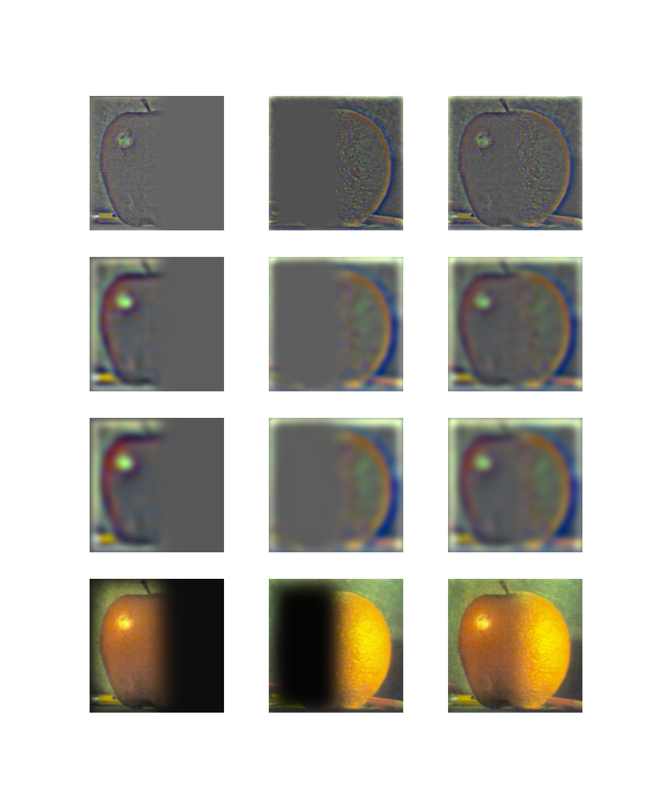

In this project we investigate manipulating the different frequency bands of an image, by implementing edge detection, image sharpening, hybrid images, and multi-resolution image blending.
Edge Detection with the derivative
We use the finite difference filters D_x = [1, -1], D_y = [1, -1]^T to approximate the partial derivatives of the image. We then form the gradient, with entries in R^2, by stacking: [im * D_x, im * D_y]. Then we map each entry from R^2 to its norm. This norm of the gradient is then used to create a binary image from thresholding the norm of the gradient. I found this threshold interactively using a slider, which helped for an efficient workflow and also for gaining an intuitive understanding.
Smoother edge detection
We next use the Derivative of Gaussian Filter [G * D_x, G * D_y] to get a smoother edge detector.We formed the Derivative of Gaussian filter by convolving a gaussian with the finite difference operators D_x and D_y. Below the various stages of the convolution are shown. Notably, the numerical convolutions involved are seen to be approximately associative (the derivative of the smoothed image is the same as the convolution of the image and the DoG filter), with some artifacts of the padding occuring in the top left row and column of the image. In other words,
Sharpening
We sharpen images by increasing the pixel values of the high frequencies. We obtain a high pass filtered copy of the image by taking the difference between the original image and a low pass filtered copy. Then we add back a scaled version of the high passed image, to create a sharpening effect. Again, the amount to add is heuristic, so we use a slider based interface to manually select an appropriate value.
When we combine the entire operation into a single unsharp masking filter we get the same results, as empirically seen in the plot below and as checked in code.
When we try to sharpen a blurred image, we get interesting edge artifacts, which come from losing the high frequency information when the initial low pass filter is applied.
Hybrid Images
Now, we look at hybrid images, which are formed by combining a low passed image with a high passed image. If we do so in such a way that respects visual gropuings, then we percieve different images when we view from near as opposed to from far. This is due to the increased spatial density of light receptors at the center of our field of vision, which means that high spatial frequencies are only percieved in the center of vision.I found that the task of creating hybrid images was very sensitive to alignment differences. Thus I interactively set the paramaters for the gaussian kernel involved in making the hybrid images. This allowed me to select noise paramaters that gave the desired hybrid image effect.
Many of the attempts to create hybrid images became borked, such as the following example:
Briefly, we look at the spectral view of hybrid image formation process. We can see that the smoothed image has its fourier transform concentrated nearer the low frequencies, and the high passed image has its fourier transform less concentrated near the low frequencies than in the fourier transform of the original.
From the two following plots the fact that the fourier transform of the sum is the sum of the fourier transforms is made evident. Indeed, this follows from the linearity of the Fourier transform.
Laplacian Stacks
We next turn to laplacian stacks and an application in image blending. Laplacian stacks are formed from gaussian stacks by taking the difference of succesive layers in the gaussian stack. Thus each layer in a laplacian stack holds information about a certain band of frequencies in the image. The last layer in the laplacian stack is not a band passed image but rather a low passed image. Finally, the total image is reconstructed by summing the layers of the stack. The correctness of this reconstruction procedure can be seen from the fact that this construction yeilds a telescoping sum where all the terms cancel except for the original image. A Laplacian stack is shown below:Blending
Now, we reproduce a result from Burt and Adelsons paper "A Multiresolution Spline With Application to Image Mosaics". The paper discusses an approach to image blending that operates on the different subbands indivisually. By using a sharper filter for the high frequency bands we avoid having details pass over the maskin boundary, and by using a blurred version of the filter for low frequency bands we avoid the perception of an abrupt image mask. We get the blurred verions of the filter simply with a gaussian stack. Once the laplacian and gaussian stacks have been constructed, the blending operation is done by performing the masking operation layerwise in the three stacks, and then reconstructing the blended image from the blended stacks. We reproduce a plot that demonstrates this process for images of an apple and an orange.
In the above figure, the first three rows are layers (0, 2, 4) from the corresponding laplacian stacks, and the final row is the image reconstructed from the stacks. The Left column is the filter pointwise multiplied with the apple, and the middle column is (1 - filter) pointwise multiplied with the orange image. The right column is the addition of the left two columns.
Now for some examples of blends: